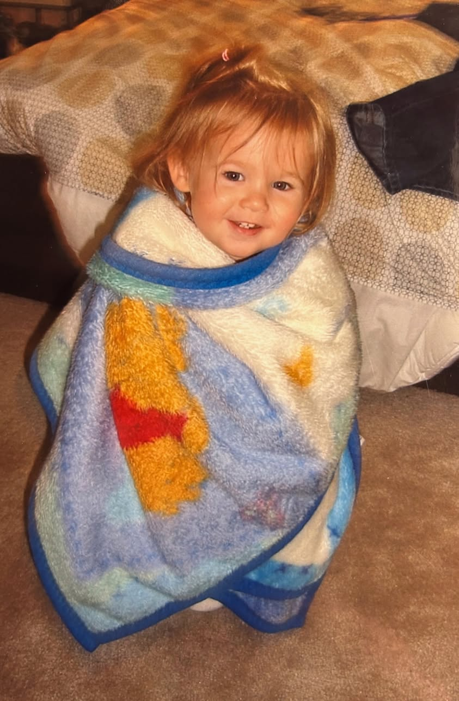
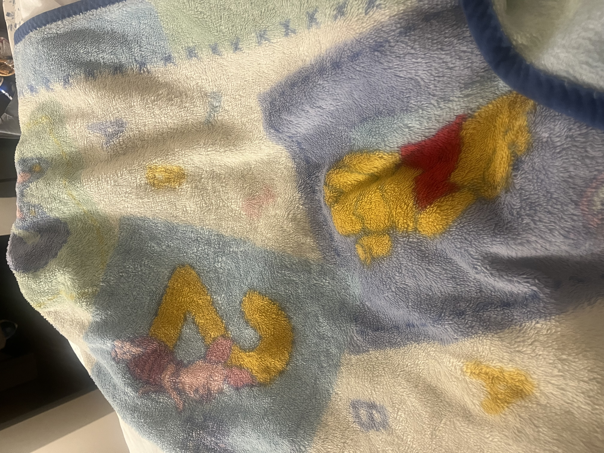

August 24, 2026


In our first class session, we discussed our favorite objects, and I chose my childhood blanket. My family was in Hurricane Katrina and we lost all of my baby stuff, and someone at the Red Cross gave it to me, which is what makes it so special to me. It has always been something that brings me a lot of comfort and reminds me of my family. My parents even found another one on eBay and have kept it just in case anything happened to mine.
The blanket is a Winnie the Pooh baby blanket and is made from a very soft, plush fabric. I believe the fabric is called minky, which is very soft and has a slightly fuzzy texture. The softness of the material is a big part of why the blanket is so comforting to me. There is also a darker blue felt border around the blanket which has held it together for many years.